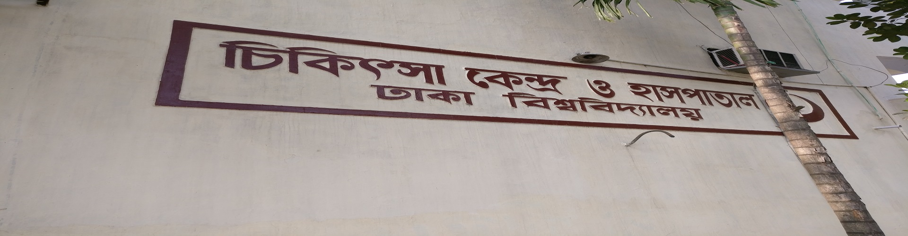

About Medical Center

The Centre also has dental unit, eye unit, x-ray department and two ambulances.
The Centre has in its premises arrangement for 30 bed accommodation so that students suffering from such
contagious diseases as chicken pox, mumps, etc. may be taken care of in isolation.A small Operation Theatre
has been established in the Centre to meet minor surgeries.
Students get medicine from the Centre free of cost and employees get medicine at cost price.
Physiotherapy service is also given to senior members and disable patients of the university family.
A Homeo Unit, consisting of 6 Homeo doctors, provides treatment and medicines free of cost to the students,
teachers and staffs and their family members.